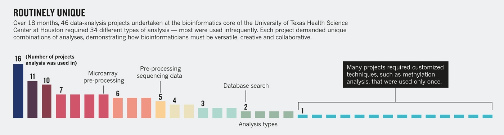

Routinely Unique
Back in April, Jeffrey Chang wrote wrote an article for Nature in which he pleaded for those who analyze bioinformatics data to be recognized as creative collaborators in need of career paths. In it, he observed:
To give greater support to researchers, our centre set out to develop a series of standardized services. We documented the projects that we took on over 18 months. Forty-six of them required 151 data-analysis tasks. No project was identical, and we were surprised at how common one-off requests were. There were a few routine procedures that many people wanted, such as finding genes expressed in a disease. But 79% of techniques applied to fewer than 20% of the projects. In other words, most researchers came to the bioinformatics core seeking customized analysis, not a standardized package.

This is why we teach what we teach: almost by definition, if someone is doing research, she's doing things that haven't been done before, and therefore don't (yet) exist in an off-the-shelf package. Just as in the lab, what we can know is limited by what we can do. This is also why teaching testing is hard: each one of the unique analyses Chang identified might need to be checked in a different way.